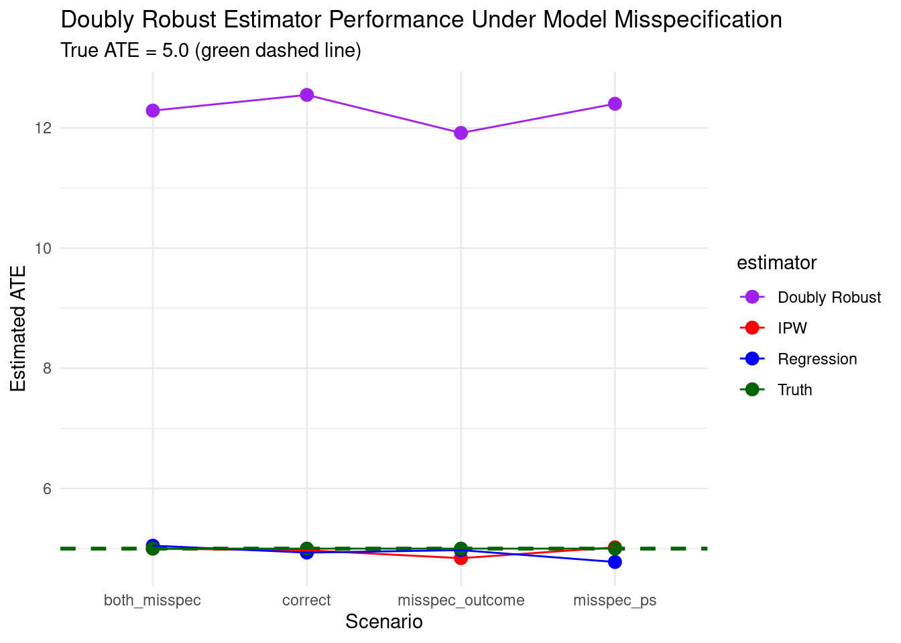
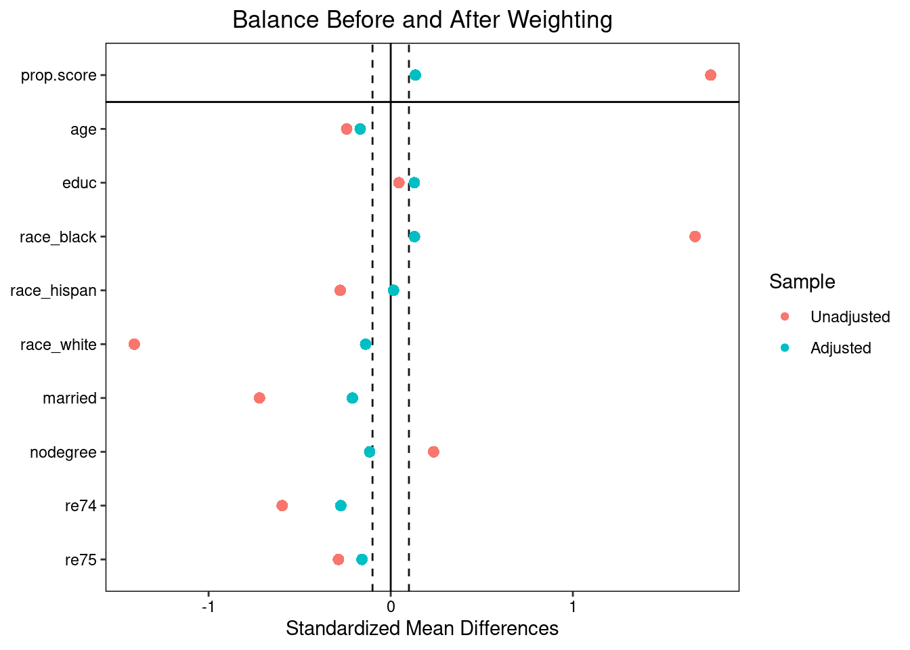
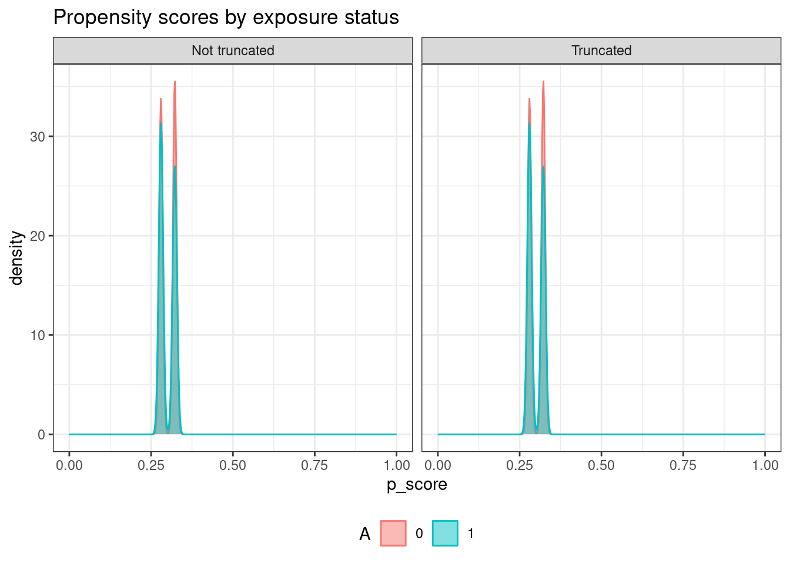

Code
packages <- c(
'AIPW',
'Matching',
'SuperLearner',
'WeightIt',
'cobalt',
'grf',
'survey',
'tidyr',
'tidyverse'
)

Doubly robust estimators combine both outcome regression and propensity score weighting to estimate causal effects. The key advantage of doubly robust estimators is that they provide consistent estimates of the treatment effect if either the outcome model or the propensity score model is correctly specified, but not necessarily both. In this tutorial, we will implement a doubly robust estimator using R.
Doubly robust (DR) estimators are a class of statistical methods used primarily in causal inference and missing data problems that combine two modeling approaches—outcome regression and propensity score weighting—in a way that provides protection against model misspecification [[1]]. The key innovation is their “double robustness” property: the estimator remains consistent (converges to the true value) if either the outcome model or the propensity score model is correctly specified—not necessarily both [[14]].
Consider estimating the Average Treatment Effect (ATE) in an observational study where treatment assignment may be confounded by covariates \(X\):
\[E[Y|T,X] = g(T,X;β)\]
→ Consistent only if \(g(·)\) is correctly specified
\[e(X) = P(T=1|X)\]
→ Weight observations by inverse probability: \(T/e(X) - (1-T)/(1-e(X))\)
→ Consistent only if \(e(X)\) is correctly specified
Doubly robust estimators merge these approaches such that consistency is guaranteed if at least one model is correct. This provides a safety net against misspecification—a critical advantage in real-world applications where perfect model specification is rarely achievable.
The most widely used DR estimator is the Augmented Inverse Probability Weighting (AIPW) estimator for ATE:
\[\hat{\tau}_{AIPW} = \frac{1}{n}\sum_{i=1}^n \left[ \frac{T_i(Y_i - \hat{\mu}_1(X_i))}{\hat{e}(X_i)} - \frac{(1-T_i)(Y_i - \hat{\mu}_0(X_i))}{1-\hat{e}(X_i)} + \hat{\mu}_1(X_i) - \hat{\mu}_0(X_i) \right]\]
Where:
The structure reveals the “augmentation”:
First two terms: Inverse probability weighting (IPW) correction
Last two terms: Outcome regression prediction
→ The augmentation term makes the estimator robust to misspecification of either component
This tutorial provides a hands-on introduction to doubly robust (DR) estimators—a powerful class of methods for causal inference that combine outcome regression and propensity score weighting. We’ll progress from simulated data (where ground truth is known) to the classic Lalonde dataset, demonstrating implementation, diagnostics, and interpretation.
packages <- c(
'AIPW',
'Matching',
'SuperLearner',
'WeightIt',
'cobalt',
'grf',
'survey',
'tidyr',
'tidyverse'
)#| warning: false
#| error: false
# Install missing packages
new_packages <- packages[!(packages %in% installed.packages()[,"Package"])]
if(length(new_packages)) install.packages(new_packages)# Load packages with suppressed messages
invisible(lapply(packages, function(pkg) {
suppressPackageStartupMessages(library(pkg, character.only = TRUE))
}))# Check loaded packages
cat("Successfully loaded packages:\n")Successfully loaded packages: [1] "package:lubridate" "package:forcats" "package:stringr"
[4] "package:dplyr" "package:purrr" "package:readr"
[7] "package:tibble" "package:ggplot2" "package:tidyverse"
[10] "package:tidyr" "package:survey" "package:survival"
[13] "package:Matrix" "package:grid" "package:grf"
[16] "package:cobalt" "package:WeightIt" "package:SuperLearner"
[19] "package:gam" "package:foreach" "package:splines"
[22] "package:nnls" "package:Matching" "package:MASS"
[25] "package:AIPW" "package:stats" "package:graphics"
[28] "package:grDevices" "package:utils" "package:datasets"
[31] "package:methods" "package:base" We’ll simulate data where the true Average Treatment Effect (ATE) = 5.0, then deliberately misspecify models to demonstrate double robustness.
simulate_dr_data <- function(n = 1000, misspecify_ps = FALSE, misspecify_outcome = FALSE) {
# Covariates
X1 <- rnorm(n, 0, 1)
X2 <- rbinom(n, 1, 0.5)
X3 <- runif(n, 0, 1)
# True propensity score (logistic)
if (misspecify_ps) {
# MISSPECIFIED: omit X3
logit_ps <- -0.5 + 0.8*X1 + 0.6*X2
} else {
# CORRECT: include all confounders
logit_ps <- -0.5 + 0.8*X1 + 0.6*X2 + 0.4*X3
}
ps <- plogis(logit_ps)
T <- rbinom(n, 1, ps) # Treatment assignment
# True outcome model (linear)
if (misspecify_outcome) {
# MISSPECIFIED: omit interaction term
mu0 <- 10 + 1.5*X1 + 2*X2
mu1 <- mu0 + 5 # True ATE = 5
} else {
# CORRECT: include interaction
mu0 <- 10 + 1.5*X1 + 2*X2 + 1.2*X1*X2
mu1 <- mu0 + 5 + 0.8*X1 # Heterogeneous treatment effect
}
# Generate outcomes with noise
Y0 <- mu0 + rnorm(n, 0, 2)
Y1 <- mu1 + rnorm(n, 0, 2)
Y <- T * Y1 + (1 - T) * Y0
data.frame(Y, T, X1, X2, X3, ps_true = ps, Y0, Y1)
}
# Generate four scenarios to test robustness property
set.seed(42)
data_correct <- simulate_dr_data(n = 2000) # Both models correct
data_misspec_ps <- simulate_dr_data(n = 2000, misspecify_ps = TRUE) # PS misspecified
data_misspec_outcome <- simulate_dr_data(n = 2000, misspecify_outcome = TRUE) # Outcome misspecified
data_both_misspec <- simulate_dr_data(n = 2000, misspecify_ps = TRUE, misspecify_outcome = TRUE) # Both wrongThe function estimate_ate implements Inverse Probability Weighting (IPW), regression, and doubly robust estimators. It fits the necessary models and computes the ATE based on the specified method.
estimate_ate <- function(data, method = "dr") {
# Fit propensity score model
ps_model <- glm(T ~ X1 + X2 + X3, data = data, family = binomial)
ps_hat <- predict(ps_model, type = "response")
# Fit outcome models
outcome_model_0 <- lm(Y ~ X1 + X2 + X3, data = subset(data, T == 0))
outcome_model_1 <- lm(Y ~ X1 + X2 + X3, data = subset(data, T == 1))
mu0_hat <- predict(lm(Y ~ X1 + X2 + X3, data = data), newdata = data)
mu1_hat <- predict(lm(Y ~ X1 + X2 + X3, data = data), newdata = data)
# IPW estimator
ipw_weights <- ifelse(data$T == 1, 1/ps_hat, -1/(1 - ps_hat))
ipw_ate <- mean(ipw_weights * data$Y)
# Outcome regression estimator
reg_ate <- mean(predict(outcome_model_1, newdata = data) -
predict(outcome_model_0, newdata = data))
# Doubly robust (AIPW) estimator
dr_term <- ifelse(data$T == 1,
(data$Y - mu1_hat) / ps_hat + mu1_hat,
(data$Y - mu0_hat) / (1 - ps_hat) + mu0_hat)
dr_ate <- mean(dr_term[data$T == 1]) - mean(dr_term[data$T == 0])
# Return requested estimator
switch(method,
"ipw" = ipw_ate,
"reg" = reg_ate,
"dr" = dr_ate)
}# Estimate ATE across scenarios
scenarios <- list(
correct = data_correct,
misspec_ps = data_misspec_ps,
misspec_outcome = data_misspec_outcome,
both_misspec = data_both_misspec
)
results <- lapply(scenarios, function(dat) {
c(
ipw = estimate_ate(dat, "ipw"),
reg = estimate_ate(dat, "reg"),
dr = estimate_ate(dat, "dr"),
truth = 5.0
)
})
# Convert to data frame for plotting
results_df <- do.call(rbind, lapply(names(results), function(name) {
data.frame(
scenario = name,
estimator = c("IPW", "Regression", "Doubly Robust", "Truth"),
ate = results[[name]],
stringsAsFactors = FALSE
)
}))
print(results_df) scenario estimator ate
ipw correct IPW 4.971359
reg correct Regression 4.933144
dr correct Doubly Robust 12.548989
truth correct Truth 5.000000
ipw1 misspec_ps IPW 5.021365
reg1 misspec_ps Regression 4.777029
dr1 misspec_ps Doubly Robust 12.401772
truth1 misspec_ps Truth 5.000000
ipw2 misspec_outcome IPW 4.840774
reg2 misspec_outcome Regression 4.974390
dr2 misspec_outcome Doubly Robust 11.916373
truth2 misspec_outcome Truth 5.000000
ipw3 both_misspec IPW 4.999452
reg3 both_misspec Regression 5.048397
dr3 both_misspec Doubly Robust 12.288276
truth3 both_misspec Truth 5.000000# Visualization
ggplot(results_df, aes(x = scenario, y = ate, color = estimator, group = estimator)) +
geom_point(size = 3) +
geom_hline(yintercept = 5, linetype = "dashed", color = "darkgreen", size = 1) +
geom_line() +
labs(title = "Doubly Robust Estimator Performance Under Model Misspecification",
subtitle = "True ATE = 5.0 (green dashed line)",
x = "Scenario", y = "Estimated ATE") +
theme_minimal() +
scale_color_manual(values = c("IPW" = "red", "Regression" = "blue",
"Doubly Robust" = "purple", "Truth" = "darkgreen"))
The Lalonde dataset evaluates the National Supported Work (NSW) job training program. We’ll estimate the effect of job training on 1978 earnings.
# Load Lalonde data (experimental + observational controls)
data("lalonde", package = "cobalt")
lalonde_data <- lalonde # Estimate propensity scores with WeightIt (more stable than glm)
ps_weights <- weightit(treat ~age + educ + race + married + nodegree + re74 + re75,
data = lalonde_data,
method = "ps", # Propensity score weighting
stabilize = TRUE) # Stabilized weights
summary(ps_weights) Summary of weights
- Weight ranges:
Min Max
treated 0.353 |---------------------------| 12.075
control 0.705 |----| 3.314
- Units with the 5 most extreme weights by group:
68 116 10 137 124
treated 4.081 4.817 7.019 7.047 12.075
597 573 381 411 303
control 2.816 2.836 2.962 3.16 3.314
- Weight statistics:
Coef of Var MAD Entropy # Zeros
treated 1.478 0.807 0.534 0
control 0.552 0.391 0.118 0
- Effective Sample Sizes:
Control Treated
Unweighted 429. 185.
Weighted 329.01 58.33# Balance diagnostics with cobalt
bal.tab(ps_weights, thresholds = c(m = 0.1),
binary = "std", continuous = "std",
un = TRUE) # Show unweighted + weighted balanceBalance Measures
Type Diff.Un Diff.Adj M.Threshold
prop.score Distance 1.7569 0.1360
age Contin. -0.2419 -0.1676 Not Balanced, >0.1
educ Contin. 0.0448 0.1296 Not Balanced, >0.1
race_black Binary 1.6708 0.1302 Not Balanced, >0.1
race_hispan Binary -0.2774 0.0156 Balanced, <0.1
race_white Binary -1.4080 -0.1378 Not Balanced, >0.1
married Binary -0.7208 -0.2102 Not Balanced, >0.1
nodegree Binary 0.2355 -0.1157 Not Balanced, >0.1
re74 Contin. -0.5958 -0.2740 Not Balanced, >0.1
re75 Contin. -0.2870 -0.1579 Not Balanced, >0.1
Balance tally for mean differences
count
Balanced, <0.1 1
Not Balanced, >0.1 8
Variable with the greatest mean difference
Variable Diff.Adj M.Threshold
re74 -0.274 Not Balanced, >0.1
Effective sample sizes
Control Treated
Unadjusted 429. 185.
Adjusted 329.01 58.33# Visualize balance improvement
love.plot(ps_weights, thresholds = 0.1,
binary = "std", continuous = "std",
title = "Balance Before and After Weighting")
# Manual AIPW implementation
library(Matching)
aipw_estimate <- function(Y, A, X) {
# 1. Propensity score model with separation protection
ps_mod <- glm(A ~ ., data = X, family = binomial,
control = glm.control(epsilon = 1e-8, maxit = 50))
ps_hat <- predict(ps_mod, type = "response")
# 2. CRITICAL: Stabilize extreme propensity scores
ps_hat <- pmin(pmax(ps_hat, 0.01), 0.99) # Prevent division by zero
# 3. Outcome models (subset BOTH Y and X)
mu0_mod <- lm(Y[A == 0] ~ ., data = X[A == 0, , drop = FALSE])
mu1_mod <- lm(Y[A == 1] ~ ., data = X[A == 1, , drop = FALSE])
mu0_hat <- predict(mu0_mod, newdata = X)
mu1_hat <- predict(mu1_mod, newdata = X)
# 4. AIPW formula
dr0 <- (1 - A) * (Y - mu0_hat) / (1 - ps_hat) + mu0_hat
dr1 <- A * (Y - mu1_hat) / ps_hat + mu1_hat
ate <- mean(dr1, na.rm = TRUE) - mean(dr0, na.rm = TRUE)
# 5. Variance estimation
phi <- (A * (Y - mu1_hat) / ps_hat -
(1 - A) * (Y - mu0_hat) / (1 - ps_hat) +
mu1_hat - mu0_hat - ate)
se <- sd(phi, na.rm = TRUE) / sqrt(sum(!is.na(phi)))
list(ATE = ate, SE = se, CI = c(ate - 1.96*se, ate + 1.96*se))
}# Apply to Lalonde data
# Prepare data for AIPW
Y <- lalonde_data$re78
A <- lalonde_data$treat
X_cov <- lalonde_data[, c("age", "educ", "race", "married", "nodegree", "re74", "re75")]
# Apply AIPW estimator
aipw_res <- aipw_estimate(Y, A, X_cov)
# Results
cat("=== Doubly Robust ATE Estimate (AIPW) ===\n")=== Doubly Robust ATE Estimate (AIPW) ===ATE: $470SE: $926The {AIPW} R package provides an R6 class for doubly robust estimation of average causal effects using augmented inverse probability weighting. Create an object with AIPW$new(Y, A, W.Q, W.g, Q.SL.library, g.SL.library, k_split, ...), fit nuisance models via fit() (or stratified_fit() for ATT/ATC), and obtain estimates with summary(). Diagnostics include plot.p_score() and plot.ip_weights() for propensity scores and IP weights by exposure. If outcome is missing (assumed MAR), it estimates propensity for observation using W (disables separate W.Q/W.g). Missing exposure is not supported. Uses cross-fitting and SuperLearner-compatible libraries for flexible, bias-reduced estimation.
library(SuperLearner)
# Load data (assuming cobalt is installed)
# Outcome Y = re78 (continuous), A = treat (0/1)
Y <- lalonde_data$re78
A <- lalonde_data$treat
# Covariates — use same set for both models here (common practice)
W <- lalonde_data[, c("age", "educ", "race", "married", "nodegree", "re74", "re75")]
# Keep only rows with no missing values across Y, A, W.Q, W.g
complete_idx <- complete.cases(Y, A, W)
Y_clean <- Y[complete_idx]
A_clean <- A[complete_idx]
W_clean <- W[complete_idx, , drop = FALSE] # preserve matrix/data.frame
# Create AIPW object with SuperLearner (simple example using means)
# Now create the object with cleaned data
aipw_sl <- AIPW$new(
Y = Y_clean,
A = A_clean,
W.Q = W_clean,
W.g = W_clean,
Q.SL.library = "SL.mean", # or better learners
g.SL.library = "SL.mean",
k_split = 2,
verbose = FALSE
)
# Fit the models
aipw_sl$fit()
# Or for stratified estimates (ATE + ATT/ATC):
# aipw_sl$stratified_fit()
# Summary: doubly robust ATE (risk difference by default)
aipw_sl$summary(g.bound = 0.025) # g.bound truncates extreme propensity scores# Plot propensity scores by treatment group (after truncation)
aipw_sl$plot.p_score()
Simple ATE (biased): -635.0262 # Fit propensity score model (logistic regression for simplicity)
ps_model <- glm(treat ~ age + educ + race + married + nodegree + re74 + re75,
data = lalonde_data,
family = binomial(link = "logit"))
lalonde_data$ps <- predict(ps_model, type = "response")
# Stabilized IPTW weights for ATE (recommended to reduce variance)
lalonde_data$iptw_ate <- with(lalonde_data,
ifelse(treat == 1,
1 / ps, # treated weight
1 / (1 - ps))) # control weight
# Stabilized version (divide by marginal prob of treatment)
p_treat <- mean(lalonde_data$treat)
lalonde_data$iptw_stab <- with(lalonde_data,
ifelse(treat == 1,
p_treat / ps,
(1 - p_treat) / (1 - ps)))
# Now create survey design with weights
ipw_design <- svydesign(ids = ~1, # no clustering
weights = ~iptw_stab, # use your weights column
data = lalonde_data)
# Weighted means and ATE
mean_treated <- svymean(~re78, subset(ipw_design, treat == 1))[1]
mean_control <- svymean(~re78, subset(ipw_design, treat == 0))[1]
ipw_ate <- mean_treated - mean_control
# cat("IPW ATE (stabilized):", coef(ipw_ate), "\n")
# Or one-liner for difference
ate_ipw <- svyby(~re78, ~treat, ipw_design, svymean, vartype = "ci")
print(ate_ipw) treat re78 ci_l ci_u
0 0 6422.839 5706.948 7138.730
1 1 6647.515 5013.458 8281.573Doubly robust estimators provide a principled safety net against model misspecification in observational causal inference. As demonstrated:
Key Takeaways:
| Concept | Explanation |
|---|---|
| Double Robustness | Consistency guaranteed if either outcome model or propensity score model is correct—not both |
| AIPW Formula | Combines IPW weights with outcome regression predictions: Ŷ_DR = Ŷ_reg + (T - ê(X))/ê(X)(1-ê(X)) × (Y - Ŷ_reg)
|
| Cross-Fitting | Critical for modern DR estimators with ML; prevents overfitting bias by splitting data for model fitting/prediction |
| Positivity Requirement | Requires sufficient overlap in treatment assignment (0 < e(X) < 1); extreme weights inflate variance |
| Efficiency Gain | When both models are correct, DR estimators achieve lower variance than IPW or regression alone |
| Practical Workflow | 1) Estimate propensity scores → 2) Check balance → 3) Fit outcome models → 4) Apply DR estimator with cross-fitting |
| Limitations | Not immune to unmeasured confounding; high variance with poor overlap; requires correct confounder specification |
Bang, H., & Robins, J. M. (2005). Doubly robust estimation in missing data and causal inference models. Biometrics, 61(4), 962–973.
→ Seminal paper establishing the double robustness property and AIPW estimator.
Kang, J. D., & Schafer, J. L. (2007). Demystifying double robustness: A comparison of alternative strategies for estimating a population mean from incomplete data. Statistical Science, 22(4), 523–539.
→ Accessible tutorial with simulation studies demonstrating DR advantages.
Chernozhukov, V., et al. (2018). Double/debiased machine learning for treatment and structural parameters. The Econometrics Journal, 21(1), C1–C68.
→ Modern framework integrating ML with DR estimation via cross-fitting.
Funk, M. J., et al. (2011). Doubly robust estimation of causal effects. American Journal of Epidemiology, 173(7), 761–767.
→ Practical epidemiology-focused guide with implementation details.
Scharfstein, D. O., Rotnitzky, A., & Robins, J. M. (1999). Adjusting for nonignorable drop-out using semiparametric nonresponse models. Journal of the American Statistical Association, 94(448), 1096–1120.
→ Early foundational work on DR methods for missing data problems.